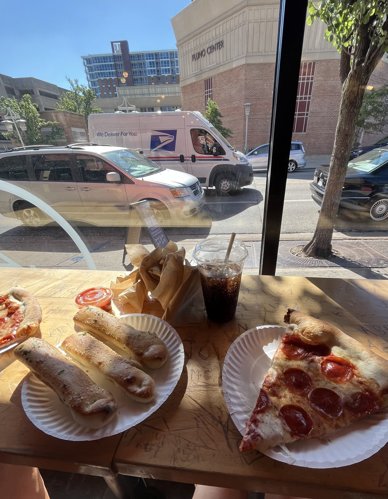
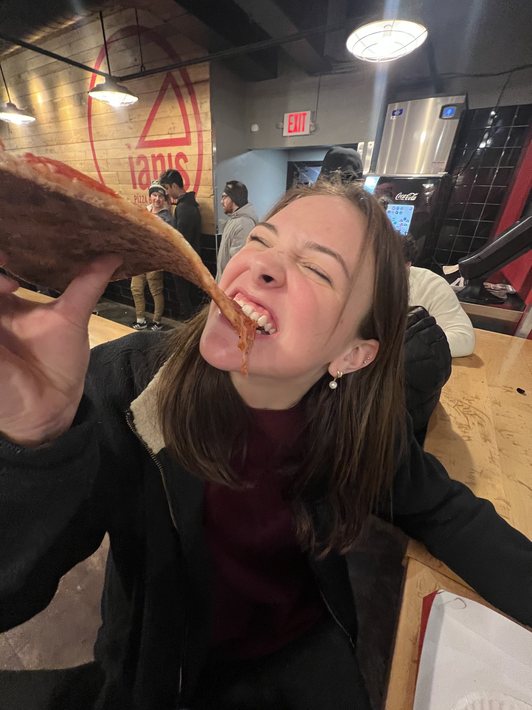

My favorite food is Pizza!


My Favorite Pizza Places:
- Ian's Pizza
- Ian's pepperoni pizza is one of the yummiest pizzas ever, I enjoy the plainness of the crust which acts as a palate cleanse when transitioning from one piece to another. Ian's pizza sauce is sweeter than normal which is probably my favorite part.
- MOD Pizza
- MOD pizza is a classic. I enjoy the amount of variety you can choose for such a little price. I always get garlic on my MOD pizza and that flavor solidifies the loveliness of each slice.
- Pizza Hut
- Pizza Hut is my go to for quick, cheap, easy access pizza. I love the crispiness of their pepperoni, Pizza Hut is all around an wonderful choice for the price.
- Giordano's
- I could not not include classic Giordano's deep dish in my list of favorites. My personal top rated Chicago pizza, a classic, thats all I have to say.